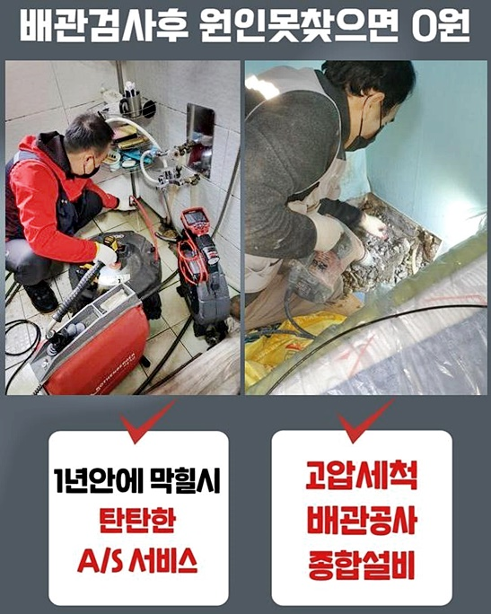
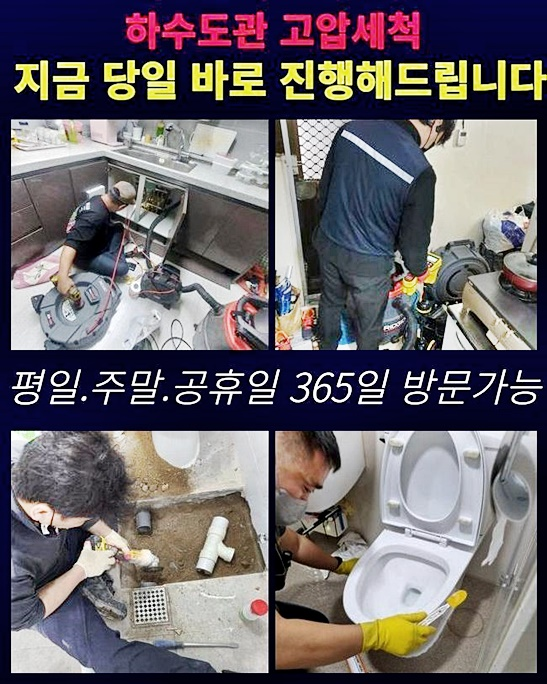
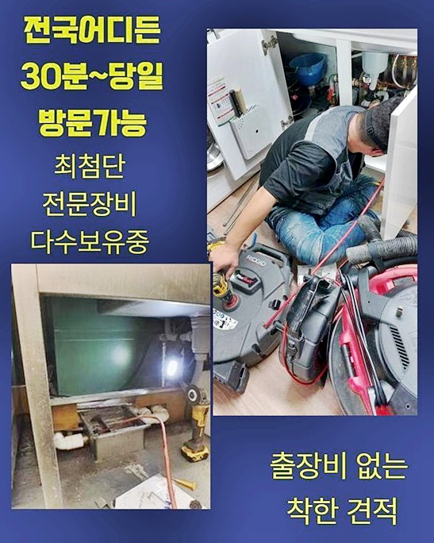
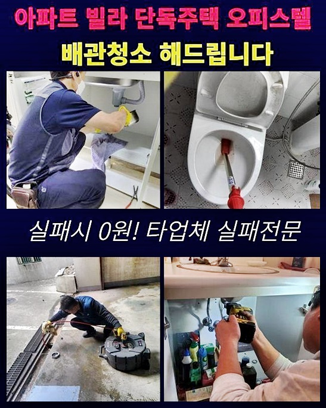
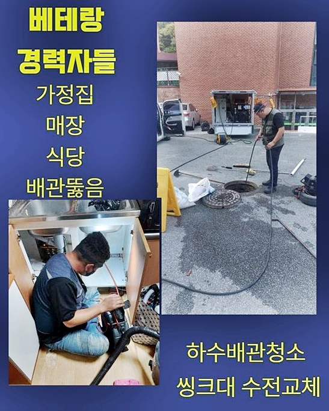
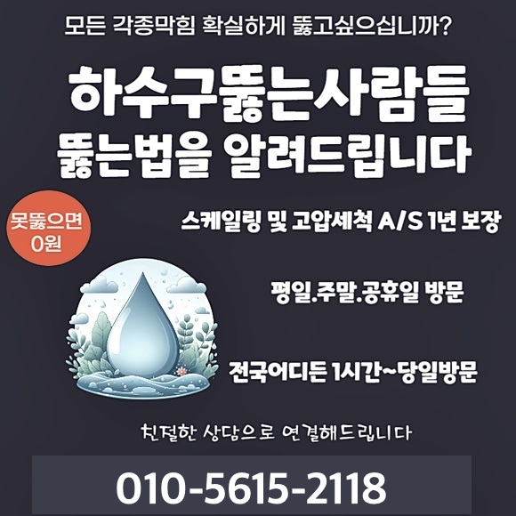

🏠 정왕2동씽크대역류 포동 하수구청소 해결방법
용인시 처인구 배관막힘 전문 시공 후기

📋 작업 개요
- 위치: 용인시 처인구, 수원시 영통구, 화성시 동탄
- 서비스 유형: 배관막힘, 하수구청소, 내시경점검
- 작업 일시:
- 업체명: 하수구수사대 (010-5615-2118)
🔍 문제 상황
정왕2동씽크대역류 포동 하수구청소 해결방법
고요한 일상속에서 느닷없이 하수구가 고장나버린다면 곤혹스러워집니다
이번 글에서는 하수관에 막힘이 나타났을때 도전해볼 방법에 대해 설명드리니 숙지해 두시면 도움이 되실겁니다
조리를 해야하는 식당 업무에 문제가 발생하면 그 시점부터 끼니조차도 제때에 섭취하지 못하게되니 배고프게 지내야합니다
게다가 오염물이 가득한 폐수가 역류하며 역한냄새까지 새어나와 불편하게 한다면 조금이라도 빨리 막힘현상들을 정비하고자 나서게 됩니다
의도는 바람직하지만 저희전문가는 비전문가라는 위치에서 배관청소를 세밀하게 완수하는 것은 어려운 것으로 전할 수 있어요
가정의 오수가 넘쳐흐른 상황들에 다다랐다면 틀림없이 하수라인 속에 기름덩어리와 여러가지 침전물질들이 섞인상황이라 첨단 도구 사용이 불가피한 경우가 일반적입니다
배수불량을 수리했던 곳도 유사한 양상을 보이고 있었습니다
화장실 내부엔 철벅거릴만큼 더러운물이 넘쳐흘렀고 고약한냄새도 매우 심한 수준이라 했습니다
소량의 물 흐르는 길을 내기위해 철제옷걸이와 청소 솔을 이용해 혼자힘으로 해결해보려 하셨지만 망가진 하수관이 거꾸로 올라와 밑바닥으로 물이 스며들어버린 상황이기에 아주 긴급하다고 하였습니다
재빨리 출장을 나가 문제 위치를 조사해보니 뒤죽박죽 어지러운 상태로 파악되었고 오염된 물에다가 찌꺼기까지 한꺼번에 넘쳐나와서 하수도에서 나는 냄새도 심하더라고요

🔎 원인 분석
💡 전문가 진단: 정밀 진단 장비를 사용하여 슬러지의 고착 여부를 판명하고 타격/세척 작업을 실시했습니다.
사방을 확인하면서 상황을 검토하였는데 불행중 다행으로 주방싱크 아래쪽에 설치된 주름 배수관에는 이상이 나타나지는 않아보였습니다
셀프로 뚫기를 시도하다가 배수파이프가 망가지는 상황이 종종 일어납니다
외관상의 조사를 마무리했으니 가구 하단부에 하수관에 석션기를 투입해서 주요 임무인 문제 해결책의 첫번째 절차를 시행하였습니다
적용한 도구는 습식 스타일로 잔여수분도 제거할 수 있는 기능이 있어 관속을 습기없이 조성한 후 청소를 하게 됩니다
빼곡하게 배관을 채운 하수들을 처리하는 순서에서 찌꺼기들도 같이 배출이 되는 상황들도 있습니다
높은 흡입 강도로 수분들을 제거하였지만 배수용기에 큰 오염원인으로 추정되는 것들이 확인되지 않았어요
시작하자마자 흐릿한 잔수들은 처리했으니 다음 절차로 배수구 내부에 전문 카메라기기를 넣어서 문제 상황 진단을 실시했습니다
길게 뻗은 관 끝머리에 카메라 렌즈가 탑재되어 어두컴컴하고 비좁은 배관 시스템이라도 막힘없이 여기저기 점검할 수 있습니다
내시경장치를 통하여 볼 수 있는 적색의 덩어리가 기름때가 뭉쳐진것인데 이와같은 기름조각인 슬러지들이 달려있는 비위생적인 모습들이 보여졌어요
더 깊숙한 곳으로 위치를 설정하니 매우 큰 부피의 오일 찌꺼기가 눈에 들어왔어요
하수구의 지름만 줄어든게 아닌 안을 가득 채운 오염요인이 존재했습니다
문제들을 초래한 핵심이유를 알게 되었으니 파악한 내용과 작업 플랜을 전달하고 작업수행을 실행합니다

🔧 작업 과정
튜브를 당겨 내시경장치를 되돌렸더니 끈적이는 기름잔여물들이 장비 표면에 붙어나와 역겨운 냄새가 공간을 채웠어요
오염 상태가 심했음을 의미하니 추측해 보건데 평소 곰팡이균들이 반복적으로 나타나거나 끊임없는 악취로 인한 고민도 있었을 것으로 보였습니다
배수관 안을 깨끗하게 대책을 세운다면 이런문제까지도 극복할 수 있습니다
끈적하게 묻어나온 오물들을 걸레로 정리하고 또다시 하수관안에 삽입하여 작업계획을 수립했습니다
과일껍질이나 물티슈같은 고체가 남아있다면 고리를 걸치는 방법으로 해결할 수 있었겠지만 슬러지덩어리가 막힘의 이유이니 회전기능이 있는 샤프트기구의 기능을 사용해야하는 상태였어요
샤프트장치는 하수관에 굳어진 슬러지나 이물질들을 분쇄하여 배관밖으로 뺴내어 주는데 서포트하는 장비입니다
말미에 헤드지점이 스텐체인과 같이 강력해서 끈끈한 기름덩어리를 분해하는 역할도 잘 처리합니다
아파트 배수관 막힘 상황의 원인이 잔존 오일이라면 대부분의 경우 활용하는 장비중 하나에 포함됩니다
배관속을 동영상으로 촬영해서 차단이 된 구간을 분명하게 보면서 차례로 작업을 수행했습니다
슬러지를 철저하게 분할하고 분쇄하는 절차가 끝나면 이후 흡입장치를 사용해 흡입하여 위로 빼내면서 청결한 배수관으로 바뀌어갔어요
쪼개지고 갈린 잔여물들을 압력을 주며 아래로 보내버리면 하부에 쌓이게되어 처리하기 어려운 사태까지 발생할지도 모르니 분쇄후 찌꺼기들은 흡입장비로 불편하지만 빨아들이는 절차를 모든 현장에서 진행합니다
많은 사람들이 함께 쓰고 있는 거대한 오수 처리시스템에 많은 이물질들로 문제가 발생하면 업무량이 대단히 많아서 압력을 가하여 해결하는 방법을 채택합니다
빌라 내부 하수구 문제가 발생한 경우에는 알아낸 원인들을 해결하는데 중점을 두고 청소를 진행합니다
좀 귀찮을수 있지만 청결하게 배수관 내측 상황들을 증진하여 둔다면 비슷한 문제로 시간을 쓸데없이 소비할 필요가 없습니다
이왕 수리를 제공하는 김에 확실하게 맡아서 문제요인은 물론이고 이후의 케어까지도 모든면에서 담당하는게 배수구 수리전문가의 사명이라고 생각합니다
싱크대 하수구 수리를 모두 끝낸다음 작업구역을 다시 확인해보니 물이 깨끗하게 흐르고 있다는 것을 파악했습니다
불그스름한 오염물질이 남아있지 않고 싹 빼서 치워버렸으니 비슷한 장애상황이 또 발생할 위험성이 희박하다고 추측됩니다
시각적 데이터를 체크하였다면 실질적 향상을 검토하려 유량 확인 점검을 실시했습니다
알아차리지 못한 시스템 오류나 막힘 발생 부위가 남아있을 수도 있으니 물을 가득히 채워 배수구 입구로 흘려넣었어요


✅ 작업 완료
다행이 부드럽게 막힘없이 배출도고 있어 이번 작업이 순탄함을 분명히 알게됐어요
다양한 장치로 함부로 뚫다간 하수관파손으로 대규모의 손해가 초래될 우려가 있으니 배수구 유지보수 전문기술자를 알아보고 연락하셔서 어려움을 해결하시기를 제안드립니다
배관 막힘 문제는 신속한 대응이 도움이 되는데 대한민국 어디서든 60분내에 방문할 수 있어서 초조해 하지 마세요
덧붙여 정직한 가격 책정으로 재정적 부담감 역시 소통함으로써 경감하기위해 애쓰니 불필요한 염려는 덜고 요청을 주시면 신속히 방문드리겠습니다
정밀한 점검을 근간으로 흠없이 깨끗한 하수구 클리닝을 실현하여 만족시켜 드릴게요



⚠️ 하수구 배관 막힘 예방 및 관리 가이드
- ✅ 머리카락, 비닐, 물티슈 등 물에 분해되지 않는 이물질은 절대 흘려보내지 마세요.
- ✅ 기름기 많은 식기는 설거지 전 키친타올로 먼저 기름때를 닦아내세요.
- ✅ 주기적으로 배수구에 뜨거운 물을 가득 부어주어 유지방 고착을 방지하세요.
- ✅ 작업 후 1년 이내 재발 시 무상 A/S 보증 서비스를 제공합니다.
💡 핵심 정리
- 확실한 장비 작업(내시경 점검 및 샤프트 스케일링)으로 원인을 뿌리 뽑습니다.
- 작업 후 1년 이내에 동일한 부위 재발 시 100% 무상 A/S 서비스를 보장합니다.
- 서울 · 경기 · 인천 전 지역에 24시간 언제든 긴급 출동할 수 있도록 항시 대기 중입니다.
❓ 자주 묻는 질문 (FAQ)
🚨 용인시 처인구 배관막힘 문제로 고민이신가요?
정확한 원인 진단과 확실한 시공으로 재발 없는 해결을 약속드립니다.
24시간 긴급 출동 | 서울 · 경기 · 인천 전지역 | 1년 내 재발 시 무상 A/S